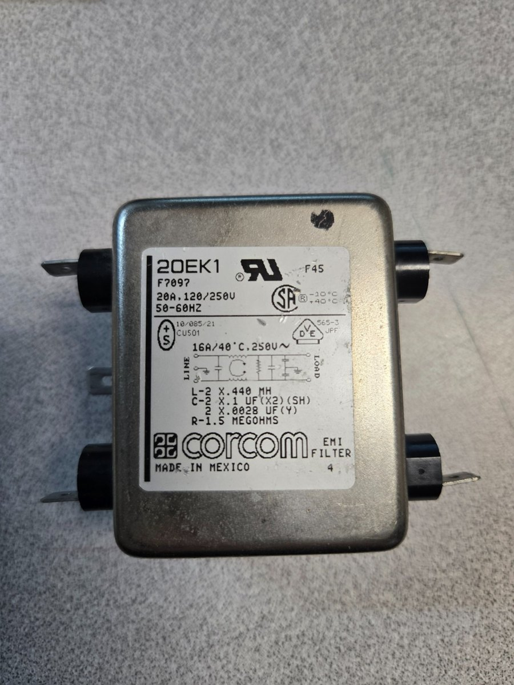

Articles Station notes
Station notes
Stop the hash
Switching supplies are cheap, small, and they hash all over HF. Here is the two-sided suppression plan I run at my station, and the one filter rating that catches people out.
A lot of us run Mean Well LRS-series or similar switching supplies now. 350 watts, small, cheap, and they work. The tradeoff is switching noise, and on HF it shows up as hash across the bands.
Below is the suppression plan I run at my station. Two sides to it.
DC side, supply to radio
Mix 31 ferrite choke on the DC leads right at the supply, then a bypass capacitor to RF ground, then an EMI/RFI line filter ahead of the radio. Clean DC out.
AC side, mains to supply
A second mix 31 choke on the AC cord. A noisy supply radiates in both directions, so choke both sides.
Notes from doing this more than once
- Mix 31 is the right ferrite for this job. Fair-Rite specifies the material for EMI suppression from 1 MHz up to 500 MHz, and the part of that range which matters for switching hash on HF sits at the bottom end of it.
- Wind 5 to 8 turns through each toroid if the cord diameter allows. Turns matter more than toroid count.
- Keep the capacitor and ground leads as short as you can. A long ground lead is an inductor pretending to help.
Sourcing the line filter
You do not need to buy one new. Nearly every piece of dead mains-powered electronics has one at the power inlet. Dead PC supplies, microwaves, printers, and washing machines are all donors. If you would rather buy, eBay and the usual online parts houses have them for $15 to $20. And if you would rather build, the filter is simple enough to lay out yourself on perfboard in a small metal enclosure.
Leave microwaves alone unless you know how to discharge the high-voltage capacitor. It holds a lethal charge after the oven is unplugged, and it does not care that you only came for the filter at the inlet.

The warning, because this is where people get burned
Match the filter's current rating to your load. The amperage rating is the spec that matters. This supply can deliver 23 amps, and a 100 watt HF radio draws 20 or more on transmit. Most inlet filters you salvage from small appliances are rated 3 to 10 amps, sized for the appliance they came out of, and running your radio's full draw through one will overheat the windings. Check the label and pick a filter rated at or above what your rig actually pulls, with margin if your shack runs warm, since current ratings derate in heat.
What you do NOT need is a DC-rated filter. The common-mode choke does not care: its two windings carry equal and opposite current, so the core sees the same cancellation on DC as it does on AC, and a 250 VAC rating is enormous next to 13.8 volts. The voltage rating is not your constraint. The current rating is.
Stop the hash before it reaches the receiver and the bands get a lot quieter.
What is your noise floor doing? If you have fought this fight with a different supply, I would like to hear what worked. Drop me a line.
73,
K4DIA
References
- Fair-Rite Products, 31 material data sheet. Describes 31 as a MnZn ferrite designed for EMI suppression from as low as 1 MHz up to 500 MHz, without the dimensional resonance limits of conventional MnZn materials. fair-rite.com
- Corcom 20EK1 filter, pictured above. The label carries both ratings: 20 A at 120/250 V across the top, and 16 A at 40 degrees C below it.